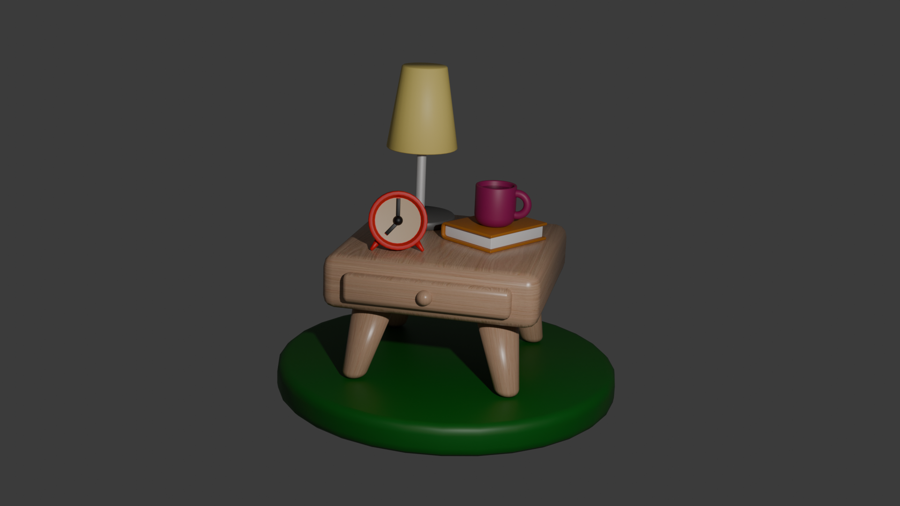

Це мій диплом від ArtCraft, отриманий за курс із цифрового мистецтва та 3D-моделювання. Я, Анастасія Велика, пишаюся цією нагородою, яка підтверджує мої навички!
Коротка анімація, створена в Blender, де тарілка з пончиком влітає у сцену з чашкою кави. Я працювала над плавною анімацією та налаштуванням освітлення для теплої атмосфери.
Будинок на маленькому острові
Ця сцена, створена в Blender, зображує затишний будинок на маленькому острові, оточеному водою. Я додала текстури дерева та води для реалістичного вигляду.
Ізометрична ванна кімната
Ізометрична сцена ванної кімнати, створена в Blender. Я зосередилася на деталях, таких як плитка, дзеркало та рушники, щоб створити стильний вигляд.
Гаманець
Коротка анімація гаманця, створена в Blender. Я експериментувала з рухами та текстурами, щоб зробити анімацію живою та цікавою.
Прикроватна тумбочка
Сцена з прикроватною тумбочкою, на якій стоїть настільна лампа, будильник і книжки. Створено в Blender із акцентом на деталі текстур і м’яке освітлення.

Ізометрична гостьова кімната
Ізометрична гостьова кімната, створена в Blender. Я додала меблі, декор і тепле освітлення, щоб створити затишну атмосферу.